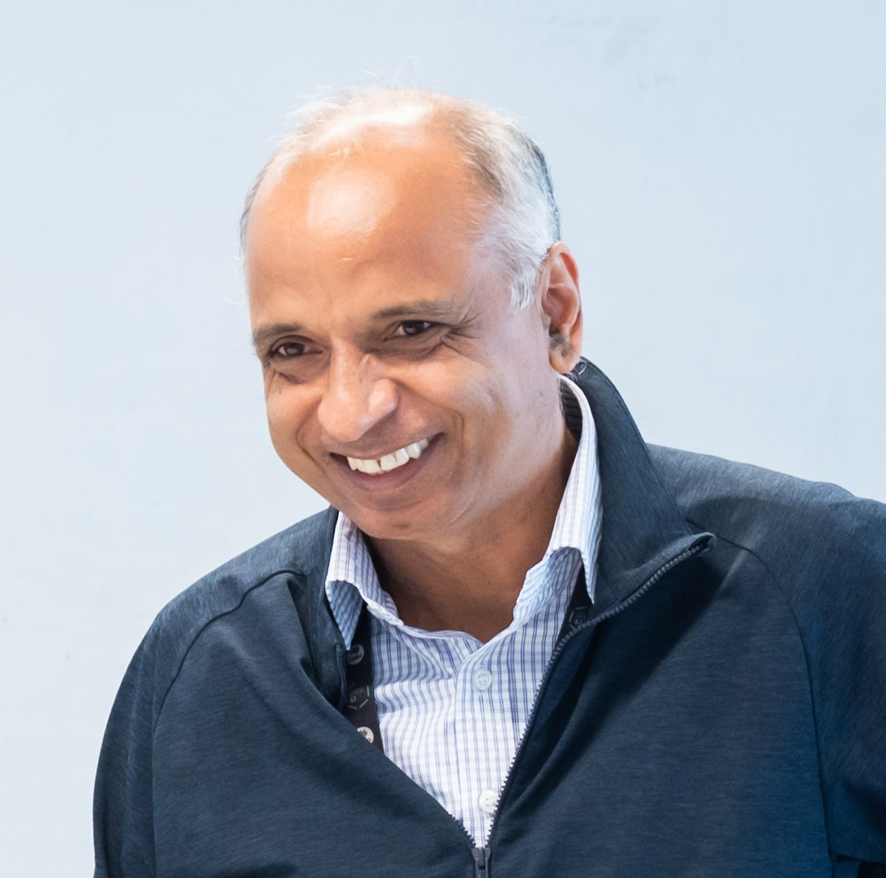

- Home
- Call for Papers
- Program Committee
- Registration
- Accepted Papers
- Technical Program
- Keynote Speakers
- Conference Venue
- Sponsors
- Contact Us

Keynote Speakers
Rei Safavi-NainiUniversity of Calgary, Canada |
Title: KEMs and Their Applications to Quantum-Safe Communications
Abstract: Key Encapsulation Mechanism (KEM) is an essential building block of hybrid encryption and modern security protocols to achieve quantum-safe communication. Traditional KEMs use the public key of a recipient to establish a shared secret key between sender and recipient. Public key KEM with post-quantum security has been one of the first primitives that was standardized by NIST.
We will look at extensions of KEMs to correlated randomness setting where the sender and recipient have access to correlated randomness during the setup phase, and show constructions of KEMs that achieve information theoretic and post-quantum security. We discuss challenges of combining the two types of KEMs in systems in practice.
Bio: Rei Safavi-Naini is a Professor of Computer Science at the University of Calgary, Canada. She held NSERC/Telus Industrial Research Chair in Information Security until 2023, and Alberta Innovates Strategic Chair in Information Security until 2022. She is co-founder of Institute for Security, Privacy and Information Assurance at the University of Calgary. Before joining University of Calgary, she was a Professor of Computer Science and the Director of Telecommunication and Information Technology Research Institute at the University of Wollongong in Australia.
She has served as the program chair of leading conferences including Crypto, Asiacrypt, ASIACCS and Financial Cryptography, and was an Associate Editor of IEEE Transactions on Information Theory (two terms), IEEE Transactions on Dependable and Secure Computing, ACM Transactions on Information and System Security (TISSEC), and ACM Computing Surveys.
Her research interest is at the intersection of theory and practice of cryptography. Her current research focusses on information theoretic cryptography, quantum-safe cryptography and security of networked and decentralized systems. She was awarded the Fellowship of IACR in 2023.
Yuliang ZhengUniversity of Alabama at Birmingham, USA |
Title: A Multi-Enclave Architecture for Blockchains Admitting Proof of Useful Work for Consensus
Abstract: Blockchains offer an alternative approach to centralized systems for data and record storage by using independently operated nodes in a distributed and decentralized network. Within a blockchain network, each node maintains an identical version of all data, without being directly controlled or managed by any centralized entity. Nodes maintain the synchronization of data through the network's consensus mechanism, a protocol built into the nodes to determine which node is given the right to append data to the network. Once chosen, the data added by the node is propagated to other nodes which update their local records to maintain synchronization. Common consensus mechanisms used fall into the categories of Proof of Work (PoW), Proof of Stake (PoS), and committee-based Byzantine Agreement (BA), each with their own respective strengths and weaknesses. Issues with these mechanisms can lead to scalability issues which can impact widespread adoption. This talk discusses the Federated Advanced Work Adversarial Consensus (FAWAC) architecture that uses a multi-enclave, committee-based consensus mechanism. FAWAC incorporates components of PoW, PoS and BA in an interconnected multi-chain structure which capitalizes on the security benefits of PoW, and the speed benefits of PoS and BA. Furthermore, it uses the completion of useful work jobs as a means for committee selection with the goal of achieving energy efficiency.
Bio: Dr. Yuliang Zheng earned his Bachelor's degree in Computer Science from Nanjing Institute of Technology, China, in 1982. He pursued graduate studies at Yokohama National University in Japan, where he obtained both his Master's and PhD degrees in Electrical and Computer Engineering in 1988 and 1991, respectively. After completing his PhD, Dr. Zheng moved to Australia, initially working as a cybersecurity research scientist at the Australian Defense Force Academy. He then served as a professor at the University of Wollongong and Monash University. In 2001, Dr. Zheng joined the faculty of the University of North Carolina at Charlotte in the USA. Since July 2015, he has been with the University of Alabama at Birmingham, where he serves as the Chair of the Department of Computer Science.
Dr. Zheng is widely recognized as the father of the signcryption algorithm, which is used by the Messenger App to protect the privacy of billions of iPhone users worldwide. His pioneering research in immunizing public key encryption against adaptive attacks has been incorporated into numerous international cybersecurity standards, including those from ISO, IEEE, and IETF. He co-founded the annual international conference on public key cryptography (PKC). His recent research focuses on blockchains and their applications.
|  |
Surya NepalCSIRO, Data61 Keynote Slides |
Title: The Evolution of Cybersecurity Research at CSIRO: A Two-Decade Journey and Future Outlook
Abstract: Over the past two decades, we have witnessed a significant and widespread digital transformation across all sectors of our economy. This transformation has been driven by the rapid emergence and adoption of critical technologies, including web services, cloud computing, the Internet of Things, social networks, generative AI, and quantum computing. While each of these technologies plays an essential role in reshaping our digital landscape, they also raise important cybersecurity concerns, particularly when applied to critical services and infrastructure. Such concerns pose potential threats to national security and the economy. This presentation will outline the journey of cybersecurity research at CSIRO over the last twenty years, highlighting the research challenges and initiatives undertaken by CSIRO’s Data61.
Bio: Dr Surya Nepal is a senior principal research scientist at CSIRO’s Data61. He has been with CSIRO since 2000 and currently leads the cybersecurity and quantum systems research group, comprising over 100 staff and PhD students. His primary area of research focuses on developing and implementing technologies in distributed systems, with a specific emphasis on security, privacy, and trust. Dr. Nepal has over 250 peer-reviewed publications to his credit. He currently serves as the interim editor-in-chief of IEEE Transactions on Service Computing and is a member of the ACM Transactions on Internet Technology editorial board. Additionally, Dr. Nepal is a conjoint professor at UNSW. He is a Fellow of IEEE.